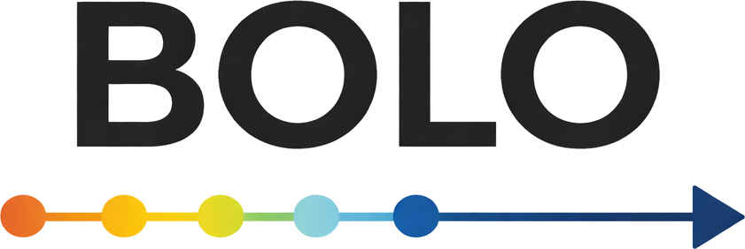

Ladda ner
Här laddar du ner BOLO-programmet och användarmanualen.
Tips: Läs gärna igenom manualen först och gör sedan ett första test med 2–3 kapitel i testläge.

AI-assisterad publiceringspipeline för fackböcker. Skapa bokbrief, outline, kapitel, DOCX och omslag i ett och samma arbetsflöde.
Här laddar du ner BOLO-programmet och användarmanualen.
BOLO använder OpenAI:s API för att generera text. För att använda programmet behöver du därför en egen API-nyckel från OpenAI.
BOLO är byggt för att göra hela arbetsflödet kring AI-assisterad bokproduktion enklare och mer strukturerat. Det passar särskilt bra för fackböcker, guideböcker, geografiska böcker, historiska projekt och andra typer av längre sakprosa.
Programmet är gjort för skrivande i längre format – inte för skönlitteratur och inte för korta chattliknande texter.